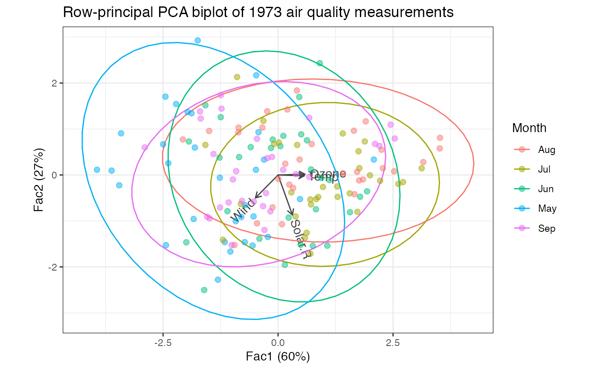

Functionality for non-linear iterative PLS ('nipals') objects
methods-ade4.RdThese methods extract data from, and attribute new data to,
objects of class "nipals" as returned by ade4::nipals().
# S3 method for nipals as_tbl_ord(x) # S3 method for nipals recover_rows(x) # S3 method for nipals recover_cols(x) # S3 method for nipals recover_inertia(x) # S3 method for nipals recover_coord(x) # S3 method for nipals recover_conference(x) # S3 method for nipals augmentation_rows(x) # S3 method for nipals augmentation_cols(x) # S3 method for nipals augmentation_coord(x)
Arguments
| x | An ordination object. |
|---|
Examples
#> [1] "data.frame"#> Ozone Solar.R Wind Temp Month Day #> 1 41 190 7.4 67 5 1 #> 2 36 118 8.0 72 5 2 #> 3 12 149 12.6 74 5 3 #> 4 18 313 11.5 62 5 4 #> 5 NA NA 14.3 56 5 5 #> 6 28 NA 14.9 66 5 6# single date variable airquality %>% transform(Date = as.Date(paste("1973", Month, Day, sep = "-"))) %>% subset(select = -c(Month, Day)) -> air_quality # NIPALS on air quality measures air_quality[, seq(4L)] %>% ade4::nipals(nf = 3L) %>% as_tbl_ord() %>% print() -> air_nipals#> # A tbl_ord of class 'nipals': (153 x 3) x (4 x 3)' #> # 3 coordinates: Fac1, Fac2, Fac3 #> # #> # Rows: [ 153 x 3 | 0 ] #> Fac1 Fac2 Fac3 | #> | #> 1 -0.305 0.334 -1.25 | #> 2 -0.426 0.930 -0.501 | #> 3 -1.27 -0.0592 0.279 | #> 4 -1.16 -1.46 -1.44 | #> 5 -3.41 0.906 -0.280 | #> #> # #> # Columns: [ 4 x 3 | 0 ] #> Fac1 Fac2 Fac3 | #> | #> 1 0.582 0.0175 0.104 | #> 2 0.312 -0.867 -0.374 | #> 3 -0.491 -0.497 0.623 | #> 4 0.569 -0.0173 0.679 |#> # A tibble: 1 x 5 #> rank n.row n.col inertia class #> <int> <int> <int> <dbl> <chr> #> 1 3 153 3 3.78 nipals# bind dates to observation coordinates (air_nipals <- bind_cols_rows(air_nipals, air_quality[, 5L, drop = FALSE]))#> # A tbl_ord of class 'nipals': (153 x 3) x (4 x 3)' #> # 3 coordinates: Fac1, Fac2, Fac3 #> # #> # Rows: [ 153 x 3 | 1 ] #> Fac1 Fac2 Fac3 | Date #> | <date> #> 1 -0.305 0.334 -1.25 | 1 1973-05-01 #> 2 -0.426 0.930 -0.501 | 2 1973-05-02 #> 3 -1.27 -0.0592 0.279 | 3 1973-05-03 #> 4 -1.16 -1.46 -1.44 | 4 1973-05-04 #> 5 -3.41 0.906 -0.280 | 5 1973-05-05 #> # … with 148 more rows #> # #> # Columns: [ 4 x 3 | 0 ] #> Fac1 Fac2 Fac3 | #> | #> 1 0.582 0.0175 0.104 | #> 2 0.312 -0.867 -0.374 | #> 3 -0.491 -0.497 0.623 | #> 4 0.569 -0.0173 0.679 |#> [1] 1 0# recover observation principal coordinates and measurement standard coordinates head(get_rows(air_nipals))#> Fac1 Fac2 Fac3 #> 1 -0.3046578 0.33404772 -1.25185277 #> 2 -0.4257363 0.92995118 -0.50109418 #> 3 -1.2653348 -0.05924552 0.27933440 #> 4 -1.1591231 -1.46052350 -1.44006014 #> 5 -3.4139264 0.90645780 -0.28037574 #> 6 -1.8355293 -0.95774016 -0.08185937#> Fac1 Fac2 Fac3 #> Ozone 0.5819820 0.01746014 0.1036609 #> Solar.R 0.3117510 -0.86735944 -0.3740939 #> Wind -0.4905363 -0.49707595 0.6228377 #> Temp 0.5687552 -0.01727006 0.6792506#> # A tbl_ord of class 'nipals': (153 x 3) x (4 x 3)' #> # 3 coordinates: Fac1, Fac2, Fac3 #> # #> # Rows: [ 153 x 3 | 2 ] #> Fac1 Fac2 Fac3 | .name Date #> | <chr> <date> #> 1 -0.305 0.334 -1.25 | 1 1 1973-05-01 #> 2 -0.426 0.930 -0.501 | 2 2 1973-05-02 #> 3 -1.27 -0.0592 0.279 | 3 3 1973-05-03 #> 4 -1.16 -1.46 -1.44 | 4 4 1973-05-04 #> 5 -3.41 0.906 -0.280 | 5 5 1973-05-05 #> # … with 148 more rows #> # #> # Columns: [ 4 x 3 | 1 ] #> Fac1 Fac2 Fac3 | .name #> | <chr> #> 1 0.582 0.0175 0.104 | 1 Ozone #> 2 0.312 -0.867 -0.374 | 2 Solar.R #> 3 -0.491 -0.497 0.623 | 3 Wind #> 4 0.569 -0.0173 0.679 | 4 Temp#> # A tibble: 3 x 5 #> .name .eig .nb .inertia .prop_var #> <fct> <dbl> <dbl> <dbl> <dbl> #> 1 Fac1 2.28 11 2.28 0.604 #> 2 Fac2 1.02 18 1.02 0.271 #> 3 Fac3 0.472 20 0.472 0.125# fortification of artificial coordinates yields proportion of variance measure fortify(air_nipals, .matrix = "coord")#> # A tibble: 3 x 5 #> .name .eig .nb .inertia .prop_var #> <fct> <dbl> <dbl> <dbl> <dbl> #> 1 Fac1 2.28 11 2.28 0.604 #> 2 Fac2 1.02 18 1.02 0.271 #> 3 Fac3 0.472 20 0.472 0.125# scree plot of inertia ggplot(air_nipals, .matrix = "coord", aes(x = .name, y = .inertia)) + theme_bw() + geom_bar(stat = "identity") + labs(x = "", y = "Inertia")# scree plot of proportion of variance (inertia) ggplot(air_nipals, .matrix = "coord", aes(x = .name, y = .prop_var)) + theme_bw() + scale_y_continuous(labels = scales::percent) + geom_bar(stat = "identity") + labs(x = "", y = "Proportion of inertia")# fortification adds all above columns fortify(air_nipals)#> # A tibble: 157 x 6 #> Fac1 Fac2 Fac3 .name Date .matrix #> <dbl> <dbl> <dbl> <chr> <date> <chr> #> 1 -0.305 0.334 -1.25 1 1973-05-01 rows #> 2 -0.426 0.930 -0.501 2 1973-05-02 rows #> 3 -1.27 -0.0592 0.279 3 1973-05-03 rows #> 4 -1.16 -1.46 -1.44 4 1973-05-04 rows #> 5 -3.41 0.906 -0.280 5 1973-05-05 rows #> 6 -1.84 -0.958 -0.0819 6 1973-05-06 rows #> 7 -0.533 -0.901 -1.68 7 1973-05-07 rows #> 8 -2.39 0.256 -0.331 8 1973-05-08 rows #> 9 -3.62 0.0954 1.26 9 1973-05-09 rows #> 10 -0.481 0.113 -0.942 10 1973-05-10 rows #> # … with 147 more rows# row-principal biplot with monthly ellipses air_nipals %>% ggbiplot() + theme_bw() + geom_cols_vector(color = "#444444") + geom_cols_text_radiate(aes(label = .name), color = "#444444") + stat_rows_ellipse(aes(color = format(Date, "%b"))) + geom_rows_point(aes(color = format(Date, "%b")), size = 2, alpha = .5) + ggtitle("Row-principal PCA biplot of 1973 air quality measurements") + labs(color = "Month")